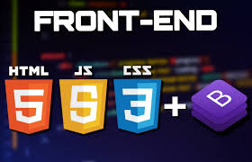
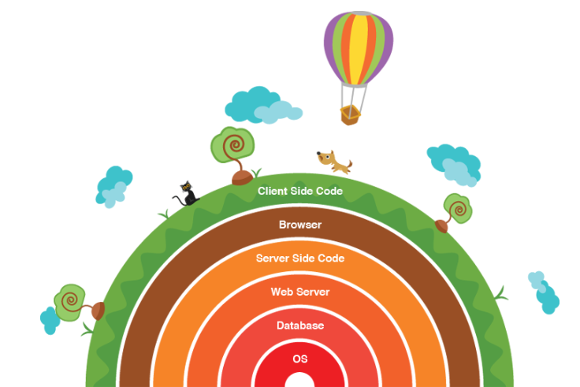

Front-End
Podemos classificar como a parte visual de um site, aquilo que conseguimos interagir.
Quem trabalha com Front End é responsável por desenvolver por meio do código uma interface gráfica e,
normalmente, com as tecnologias base da Web: HTML, CSS e JavaScript.
Algumas pessoas podem confundir um pouco esse trabalho com o que um designer faz,
pois no passado existia uma entidade chamada Webmaster que fazia tudo isso e mais um pouco,
mas a diferença aqui é que o designer vai utilizar alguma ferramenta visual para desenhar a interface,
do Photoshop ao Sketch e, quem faz Front-End, estará mais próxima do código em si,
que irá rodar num navegador Web como o Chrome, Firefox ou Safari.
Back-End
Como o próprio nome sugere, vem da ideia daquilo que tem por trás de uma aplicação.
Pode ficar meio abstrato num primeiro momento, mas pense que para conseguir usar o Facebook no dia a dia,
dados (as informações) do seu perfil, amigos e publicações precisam estar salvos em algum lugar
e serem processados a partir dele, sendo este lugar um banco de dados.
O Back-End trabalha em boa parte dos casos fazendo a ponte entre os dados que vem do navegador
rumo ao banco de dados e vice-versa, sempre aplicando as devidas regras de negócio, validações
e garantias num ambiente restrito ao usuário final (ou seja, onde ele não consegue acessar ou manipular algo).

Full-Stack
Um desenvolvedor full stack é um desenvolvedor de software que tem a habilidade e
experiência necessárias para desenvolver uma aplicação do começo ao fim, do banco de dados
à interface do usuário. Além de desenvolver o front-end e o back-end de uma aplicação,
um dev full stack também pode ser responsável pelo deploy da aplicação.
A tradução literal de Full Stack é “pilha toda” e, com isso, temos uma ideia geral acerca
do porquê esse nome se refere a pessoa que trabalha com todas as tecnologias que envolvem o desenvolvimento web.
A Stack de desenvolvimento é o conjunto geral de tecnologias de uma aplicação.
Por exemplo, para web, é comum que o front-end seja desenvolvido com HTML, CSS e Javascript,
enquanto o back-end pode ser criado com PHP e o banco de dados MySQL.